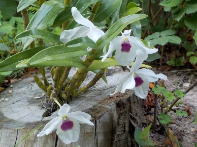
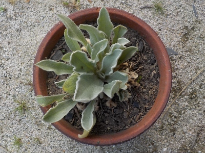
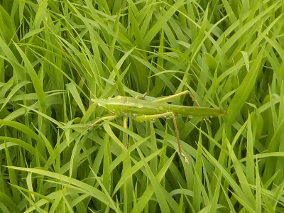
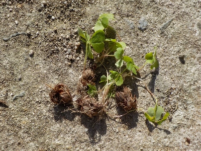

セッコクが咲いていました。
2025/05/28

成長している感じがしないセッコクですが、花が咲くってことは元気なのかな？
販売しているセッコクを見ますが、どうせなかなか成長しないんだろうと思って買う気がしないです。
2025/05/28

成長している感じがしないセッコクですが、花が咲くってことは元気なのかな？
販売しているセッコクを見ますが、どうせなかなか成長しないんだろうと思って買う気がしないです。
2025/05/19

雑草が生えている中、シルバーリーフがあったのでちょっと目立ってました。
どこかから何かのタネが飛んできて生えたんでしょう。検索したらフランネルソウって名前が出ました。
多湿に弱いらしいので、鉢植えで育てることにしました。
シルバーリーフってお店でよく見るけど、買ってまでは欲しくないなと思ってました。タダなら試しに育ててもいいかな。
2025/05/10

バッタの大きさからして越冬してますね。バッタって冬が越せるんだ。
冬に弱って動けなくなるバッタをよく見てたので、なんとなく越冬しないと思ってました。
2025/05/10

掘り起こさないと土に球根が残って何度でも芽を出す厄介な草です。
小さくてかわいいけど、植木鉢には生えて欲しくないな。
過去の日記
畑仕事じゃないよ。